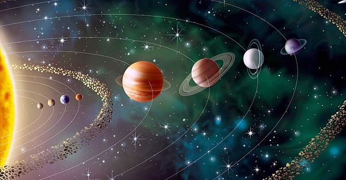

Astronomia é uma ciência natural que estuda corpos celestes (como estrelas, planetas, cometas, nebulosas, aglomerados de estrelas, galáxias) e fenômenos que se originam fora da atmosfera da Terra (como a radiação cósmica de fundo em micro-ondas). Preocupada com a evolução, a física e a química de objetos celestes, bem como a formação e o desenvolvimento do universo.
A astronomia é uma das mais antigas ciências. Culturas pré-históricas deixaram registrados vários artefatos astronômicos, como Stonehenge, os montes de Newgrange e os menires. As primeira civilizações, como os babilônios, gregos, chineses, indianos, persas e maias realizaram observações metódicas do céu noturno. No entanto, a invenção do telescópio permitiu o desenvolvimento da astronomia moderna. Historicamente, a astronomia incluiu disciplinas tão diversas como astrometria, navegação astronômica, astronomia observacional e a elaboração de calendários. Durante o período medieval, seu estudo era obrigatório e estava incluído no Quadrivium que, junto com o Trivium, compunha a metodologi a de ensino das sete Artes liberais. ]
Inicialmente, a astronomia envolveu somente a observação e a previsão dos movimentos dos objetos no céu que podiam ser vistos a olho nu. O Rigveda refere-se aos 27 asterismos ou nakshatras associados aos movimentos do Sol e também às doze divisões zodiacais do céu. Durante milhares de anos, as pessoas investigaram o espaço e a situação da Terra. No ano 4000 a.C., os egípcios desenvolveram um calendário baseado no movimento dos objetos celestes. A observação dos céus levou à previsão de eventos como os eclipses. Os antigos gregos fizeram importantes contribuições para a astronomia, entre elas a definição de magnitude aparente. A Bíblia contém um número de afirmações sobre a posição da Terra no universo e sobre a natureza das estrelas e dos planetas, a maioria das quais são poéticas e não devem ser interpretadas literalmente; ver Cosmologia bíblica. Nos anos 500, Aryabhata apresentou um sistema matemático que considerava que a Terra rodava em torno do seu eixo e que os planetas se deslocavam em relação ao Sol.
O estudo da astronomia quase parou durante a Idade Média, à exceção do trabalho dos astrónomos árabes. No final do século IX, o astrónomo árabe ou persa al-Farghani (Abu'l-Abbas Ahmad ibn Muhammad ibn Kathir al-Farghani) escreveu extensivamente sobre o movimento dos corpos celestes. No século XII os seus trabalhos foram traduzidos para o latim, e diz-se que Dante aprendeu astronomia pelos livros de al-Farghan.
No final do século X, um observatório enorme foi construído perto de Teerã, Irã, pelo astrônomo al-Khujandi, que observou uma série de trânsitos meridianos do Sol, que permitiu-lhe calcular a obliquidade da eclíptica, também conhecida como a inclinação do eixo da Terra relativamente ao Sol. Como sabe-se hoje, a inclinação da Terra é de aproximadamente 23°34', e al-Khujandi mediu-a como sendo 23°32'19". Usando esta informação, compilou também uma lista das latitudes e das longitudes de cidades principais.
Omar Khayyam (Ghiyath al-Din Abu'l-Fath Umar ibn Ibrahim al-Nisaburi al-Khayyami) foi um grande cientista, filósofo e poeta persa que viveu de 1048 a 1131. Compilou muitas tabelas astronômicas e executou uma reforma do calendário que era mais exato do que o Calendário Juliano e se aproximava do Calendário Gregoriano. Um feito surpreendente era seu cálculo do ano como tendo 365,24219858156 dias, valor esse considerando a exatidão até a sexta casa decimal se comparado com os números de hoje, indica que nesses mil anos pode ter havido algumas alterações na órbita terrestre.